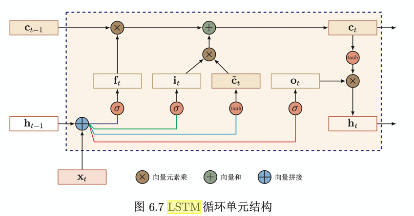

都忘了
最近要面试，遂把这些破玩意儿拿来复习下
high-level的理解
RNN
RNN可以看成一个带状态的函数，最原子的操作（对应的主体取名叫单元rnn）是输入m个特征（注意 都是一个时间点）输出num_cell个实数，同时更新自己的状态（也就是num_cell个参数），拓展到多个时间点，就把单元rnn连续运行seq_len次（seq2seq中encoder序列长度）。
RNN在学习过程中面临一个问题--学不到长期的依赖关系（Long term dependency problem）。梯度要么爆炸要么消失，而梯度是调整权重的之指明灯，灯坏了，权重就不知道下一步该怎么调整了。所以实际上只能学到，短期的依赖关系（离输出层最近的梯度还是没毛病的）。
怎么解决长期依赖问题呢？从梯度下手，找到避免梯度爆照/梯度消失的方法。
调参，同时使用非饱和的激活函数，保证\(\operatorname{diag}\left(f^{\prime}\left(\mathbf{z}_{i}\right)\right) U^{\mathrm{T}} \approx 1\)
改进模型或者优化方法,
梯度爆炸：梯度截断或者权重衰减
梯度消失：改模型，like this
\[ \mathbf{h}_{t}=\mathbf{h}_{t-1}+g\left(\mathbf{x}_{t}, \mathbf{h}_{t-1} ; \theta\right) \]
酱紫，连续的两个状态之间既有线性关系，也有非线性关系，在一定程度可以缓解梯度消失。但依然有一个问题--记忆容量，随着\(h_t\)不断累积存储输入信息，会发生饱和现象，也就是说状态\(h_t\)可以存储的信息是有限的，记忆单元存储的内容越来越多，丢失的信息也越来越多。
解决容量问题的方法：选择性遗忘，同时选择性更新。主要通过引入门控来达到这个目的，这一类网络也叫基于门控的循环神经网络（Gated RNN）。主要是LSTM和GRU
LSTM

LSTM引入新的内部状态专门进行先行的循环信息传递，同时将非线性加工后的信息给隐藏层的外部状态/
lstm有3个门，分别为输入门，输出门，遗忘门
- 输入门：控制当前时刻的候选状态有多少信息要保留
- 输出门：控制当前内部状态有多少信息要输出给外部状态
- 遗忘门：表示上一个时刻的内部状态需要遗忘多少信息
cnn 和 rnn视觉对比
有两个图还蛮有意思的，


cnn/rnn/attention